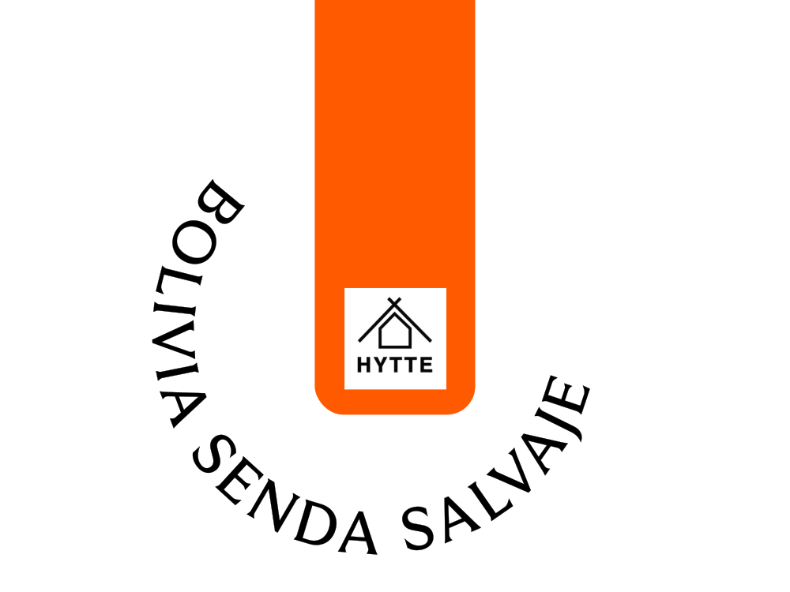

6월에는 ‘부산 로스터리’의 커피를 수집해 소개드립니다.
한국에는 멋진 로스터리가 많습니다.
각자의 색깔을 가지고 꾸준히 좋은 커피를 볶는 분들을 만나면 감사한 마음이 듭니다.
덕분에 어느 지역에 가든 좋은 커피를 만나는 즐거움을 누릴 수 있기 때문입니다.
RBC가 팬이 된 곳들을 안암 손님들께도 소개합니다.
이번 달에는 국내의 멋진 로스터리들 중 부산에 위치한 로스터리들의 커피를 소개합니다.
바닷가로 드라이브 가기 좋은 6월, 부산 고유의 생동감 넘치는 분위기와 어울리는 커피 2종입니다.
| 체리가 연상되는 여운 짙은 원두 |
| 농장 |
El Salvador, Alotepec-Metapán |
| 지역 |
Colombia, Huila |
| 품종 |
Pacamara |
| 가공 |
Natural |
| 엘살바도르 산 안드레스 내추럴 |
|
체리와 와인의 향미가 연상되는 짙은 여운의 커피입니다.
풍부한 향과 농밀한 단맛을 가진 커피를 즐기는 분께 추천드려요. 아이스 추출시에도 짙은 향미를 잘 전달하는데 집중했습니다.
로스팅: 모모스커피(부산)
|

| 잘 익은 오렌지 같이 상큼한 원두 |
| 농장 |
Finca Senda Salvaje |
| 지역 |
Bolivia, Caranavi, Loa |
| 품종 |
Catuai Rojo |
| 가공 |
Washed |
| 볼리비아 센다 살바헤 |
|
잘 익은 오렌지 같은 풍부한 단맛이 매력적인 커피입니다. 진득한 단맛과 생동감 있는 산미를 가진 새콤달콤한 커피를 즐기는 분께 추천드려요. 아이스
추출시에도 새콤달콤
밝은 산미와 단맛을 잘 전달하는데 집중했습니다.
로스팅: 히떼로스터리(부산)
|